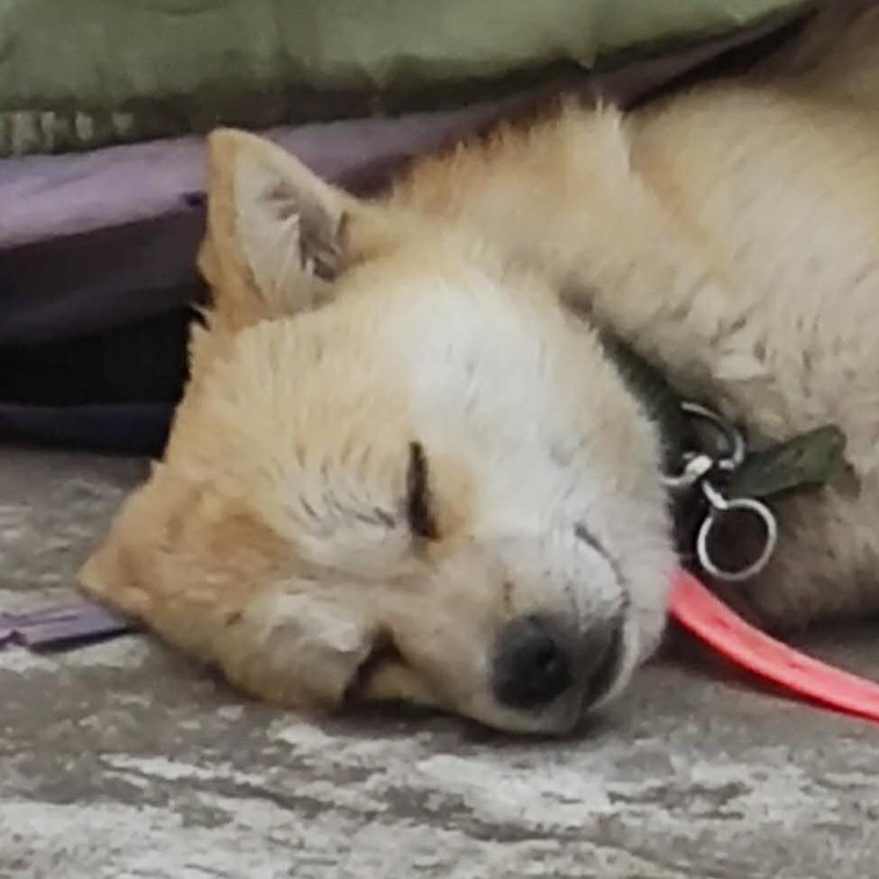

1. 自适应椭圆
画一个椭圆，设置水平半径和垂直半径
半椭圆练习，灵活运用 border-radius
半椭圆练习，灵活运用 border-radius
1/4椭圆练习，灵活运用 border-radius
平行四边形
45° 平行四边形，元素嵌套方案
45° 平行四边形，伪元素方案
菱形图片

使用一个 div 包裹 img 方案
直接使用一个 img 标签方案
使用 clip-path 配合 transition 平滑过渡为完整图片